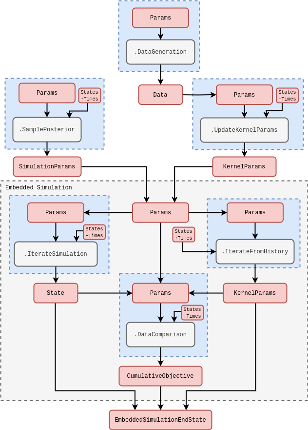
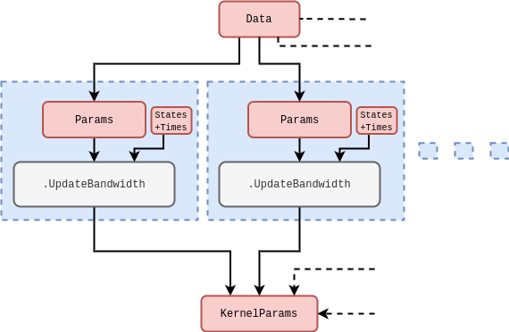

Online sampling from arbitrary posterior densities using a simulation engine
Introduction
In a previous article [1] we used a simple, but effective, technique to approximate the conditional density of simulation parameters \(P_{({\sf t}+1){\sf t}}(z\vert X',{\sf Y})\) such that we were able to both update its shape with the arrival of new data as well as sample new values from it while incorporating a past-discounting distribution ansatz into the model. While robust, this technique only estimated the first two moments of the posterior distribution and that of the synethetic likelihood used to compare simulation states to the data. Ideally, we would like to be able to efficiently sample from the posterior regardless of likelihood/posterior shape and modality.
It is the aim of this article to generalise our distribution sampler using an adaptive sequential Monte Carlo algorithm (see [2] or [3]) which uses a density kernel to update the importance weights of simulation \((X,z)\) samples as they are taken. This particle filter will, in principle, be capable of adaptively sampling from practically any posterior distribution shape, regardless of stationarity.
Before launching into a description of the algorithm, let’s ensure the mathematical details have been covered. To formalise our approach to density estimation, we first recall from [4] our fully general description for the time evolution of probabilities over simulation states
\[ \begin{align} P_{{\sf t}+1}(x\vert z) &= \int_{\Omega_{{\sf t}}} {\rm d}X' P_{{\sf t}}(X'\vert z) P_{({\sf t}+1){\sf t}}(x\vert X',z) \,. \end{align} \]
Assuming that the state space is continuous (transformations will always exist to handle discrete variables too), we can approximate the conditional probability of this expression with a sum of logarithmic expansions around past states which are truncated at second order
\[ \begin{align} \ln P_{({\sf t}+1){\sf t}}(x\vert X',z) &\simeq \sum_{{\sf t}'={\sf t}-{\sf s}}^{\sf t}\bigg[ \ln P_{({\sf t}+1){\sf t}}(x{=}X_{{\sf t}'}\vert X',z) + \frac{1}{2}\sum^n_{i=0}\sum^n_{j=0}(x-X_{{\sf t}'})^i{\cal H}^{ij}_{({\sf t}+1){\sf t}'}(X')(x-X_{{\sf t}'})^j \bigg] \\ {\cal H}^{ij}_{({\sf t}+1){\sf t}'}(X') &= \frac{\partial^2}{\partial x^i\partial x^j}\ln P_{({\sf t}+1){\sf t}}(x\vert X',z) \bigg\vert_{x{=}X_{{\sf t}'}} \,, \end{align} \]
where we have assumed that the conditional probability peaks when the past state equals the future one \(X_{{\sf t}'}=x\) (such that the first derivatives of the expansion all vanish). Note that we have also truncated the state history depth up to some number of timesteps \({\sf s}\) to write an expression which is closer to that of the computation in practice, as in previous work.
Given the expression above, it’s therefore quite natural to consider the following kernel density approximation
\[ \begin{align} P_{{\sf t}+1}(X\vert z) \simeq Q_{{\sf t}+1}(X\vert z) \propto \sum_{{\sf t}'={\sf t}-{\sf s}}^{{\sf t}}\int_{\Omega_{{\sf t}}} {\rm d}X' P_{{\sf t}}(X'\vert z) K[x,X_{{\sf t}'};{\cal H}_{({\sf t}+1){\sf t}'}(X')] \,, \end{align} \]
where \(K(x,x';H)\) is some smoothing kernel which takes the form
\[ \begin{align} K(x,x';H) &\propto \big\vert H \big\vert^{-\frac{1}{2}} \exp \bigg[ -\frac{1}{2}\sum_{i=0}^n\sum_{j=0}^n(x-x')^i(H^{-1})^{ij}(x-x')^j\bigg] \,, \end{align} \]
where \(H\) is the bandwidth matrix.
In order for the kernel to adapt to the changes in the shape of the probability density over time, we will need to provide a mechanism for updating each bandwidth matrix \({\cal H}_{({\sf t}+1){\sf t}'}(X')\) in response to these changes. This ends up being fairly straightforward if we borrow some concepts from Bayesian analysis.
The conjugate prior for a Bayesian update of the bandwidth matrix would naturally be the inverse-Wishart distribution
\[ \begin{align} &{\sf InverseWishartPDF}[{\cal H}_{({\sf t}+1){\sf t}'};\Psi_{({\sf t}+1){\sf t}'},d] = \\ & \qquad 2^{-\frac{dn}{2}}\Gamma^{-1}_n\bigg( \frac{d}{2}\bigg)\vert \Psi\vert^{\frac{d}{2}} \vert H_{({\sf t}+1){\sf t}'}\vert^{-\frac{(d+n+1)}{2}}{\rm exp}\bigg\{-\frac{1}{2}\sum_{i=0}^n[\Psi_{({\sf t}+1){\sf t}'}{\cal H}^{-1}_{({\sf t}+1){\sf t}'}]^{ii}\bigg\} \,, \end{align} \]
where here \(\Gamma_n\) is the multivariate gamma function. Upon updating this prior with a likelihood which follows the same square-exponential (multivariate normal) shape as the smoothing kernel we introduced above via Bayes’ rule, it is equivalent to simply update the parameters of the inverse-Wishart distribution like so
\[ \begin{align} (\Psi^{ij}_{({\sf t}+1){\sf t}'})^{{\sf m}+1} &= (\Psi^{ij}_{({\sf t}+1){\sf t}'})^{\sf m} + (x-x')^i(x-x')^j \\ (d)^{{\sf m}+1} &= (d)^{{\sf m}} + 1\,, \end{align} \]
where the \({\sf m}\) superscript here denotes the ‘\({\sf m}\)-th’ update to the parameter.
Given this prior and data update, a closed-form expression for the posterior distribution can then be used as the smoothing kernel
\[ \begin{align} K(x,x';\Psi_{({\sf t}+1){\sf t}'},d) &\propto \big\vert \Psi_{({\sf t}+1){\sf t}'} \big\vert^{-\frac{1}{2}} \bigg[ 1+\frac{1}{d}\sum_{i=0}^n\sum_{j=0}^n(x-x')^i(\Psi_{({\sf t}+1){\sf t}'}^{-1})^{ij}(x-x')^j\bigg]^{-\frac{(d + n)}{2}} \,, \end{align} \]
since one can marginalise over the possible post-update bandwidth matrices that can exist to arrive at a posterior distribution expressed in terms of updated parameters from the prior. Note that this posterior-updated kernel density is proportional to a multivariate t-distribution.
Continue from here and consider add in references to the above calculations and distributions…
Algorithm design
We can motivate the density smoothing model through specifying the following functional ‘distribution over distributions’ which uses a symmetrised form of the Kullback-Leibler divergence [5]
\[ \begin{align} {\cal P}_{({\sf t}+1){\sf t}}[Q_{({\sf t}+1){\sf t}}] &\propto e^{-D^{\rm sym}_{\rm KL}[Q_{({\sf t}+1){\sf t}},P_{({\sf t}+1){\sf t}}]} \\ D^{\rm sym}_{\rm KL}[Q_{({\sf t}+1){\sf t}},P_{({\sf t}+1){\sf t}}] &= \frac{1}{2}D_{\rm KL}[Q_{({\sf t}+1){\sf t}}\vert\vert P_{({\sf t}+1){\sf t}}] + \frac{1}{2}D_{\rm KL}[P_{({\sf t}+1){\sf t}} \vert\vert Q_{({\sf t}+1){\sf t}}] \\ &= \frac{1}{2}\int_{\zeta_{{\sf t}+1}} {\rm d}z \, Q_{({\sf t}+1){\sf t}}(z\vert X',{\sf Y})\ln \frac{Q_{({\sf t}+1){\sf t}}(z\vert X',{\sf Y})}{P_{({\sf t}+1){\sf t}}(z\vert X',{\sf Y})} \\ &\qquad + \frac{1}{2}\int_{\zeta_{{\sf t}+1}} {\rm d}z \, P_{({\sf t}+1){\sf t}}(z\vert X',{\sf Y})\ln \frac{P_{({\sf t}+1){\sf t}}(z\vert X',{\sf Y})}{Q_{({\sf t}+1){\sf t}}(z\vert X',{\sf Y})} \,. \end{align} \]
Now consider the situation where we would like to track the progress of a single weighted sample of \(z\) from our approximation to \(P_{({\sf t}+1){\sf t}}(z\vert X',{\sf Y})\) at time \({\sf t}+1\). Let’s refer to this sample as \(Z_{{\sf t}+1}\) and examine how it maps to a log-probability from the distribution above
\[ \begin{align} \ln {\cal P}_{({\sf t}+1){\sf t}}[Q_{({\sf t}+1){\sf t}}] &\simeq \frac{1}{2}Q_{({\sf t}+1){\sf t}}(Z_{{\sf t}+1}\vert X',{\sf Y})\ln \frac{Q_{({\sf t}+1){\sf t}}(Z_{{\sf t}+1}\vert X',{\sf Y})}{{\sf w}_{{\sf t}+1}} + \frac{1}{2}{\sf w}_{{\sf t}+1}\ln \frac{{\sf w}_{{\sf t}+1}}{Q_{({\sf t}+1){\sf t}}(Z_{{\sf t}+1}\vert X',{\sf Y})} \,, \end{align} \]
where \({\sf w}_{{\sf t}+1}\) corresponds to the weight of the sample which comes from the kernel approximation to the density of \(P_{({\sf t}+1){\sf t}}(z\vert X',{\sf Y})\).
Note that we can also take expectation values with this distribution over other parameters. For instance, we can compute the expected bandwidth matrix
\[ \begin{align} {\rm E}_{{\sf t}+1}[H(z)] &\simeq \frac{\sum_{H}H(z){\cal P}_{({\sf t}+1){\sf t}}[Q_{({\sf t}+1){\sf t}};H(z)]}{\sum_{H}{\cal P}_{({\sf t}+1){\sf t}}[Q_{({\sf t}+1){\sf t}};H(z)]} \,, \end{align} \]
where \(\sum_{H}\) represents a summation over possible values for \(H(z)\). Choosing this expected bandwidth will not strictly minimise the \(D^{\rm sym}_{\rm KL}\) in all situations, but it represents a mean-field approximation to this optimal value which will be less sensitive to extreme fluctuations in the data. For this desirable robustness, we’re going to use the expected bandwidth in our adaptive algorithm.
Given that \(H(z)\) must be a symmetric matrix, it would be natural to draw such a sample from a Wishart distribution, with the probability density
\[ \begin{align} {\sf WishartPDF}[H(z);V,d] = 2^{-\frac{dn}{2}}\Gamma^{-1}_n\bigg( \frac{d}{2}\bigg)\vert V\vert^{-\frac{d}{2}} \vert H(z)\vert^{\frac{d-n-1}{2}}{\rm exp}\bigg\{-\frac{1}{2}\sum_{i=0}^n[V^{-1}H(z)]^{ii}\bigg\} \,, \end{align} \]
where here \(\Gamma_n\) is the multivariate gamma function. We can combine both the Wishart distribution and the equation for the expected \(H(z)\) together to form an iterative algorithm that converges on \({\rm E}_{{\sf t}+1}[H(z)]\). For the \(({\sf m}+1)\)-th step of this algorithm, we draw a new sample for \(H(z)={\sf H}^{{\sf m}+1}(z)\) from a distribution with probability density \({\sf WishartPDF}\{H(z);{\rm E}^{{\sf m}}_{{\sf t}+1}[H(z)],d_0+{\sf m}+1\}\) and use this sample to update the \({\sf m}\)-th iteration value for \({\rm E}^{{\sf m}}_{{\sf t}+1}[H(z)]\) to the next like this
\[ \begin{align} {\sf N}^{{\sf m}+1}(z) &= {\cal P}_{({\sf t}+1){\sf t}}[Q_{({\sf t}+1){\sf t}};{\sf H}^{{\sf m}+1}(z)] + {\sf N}^{{\sf m}}(z)\\ {\rm E}^{{\sf m}+1}_{{\sf t}+1}[H(z)] &= \frac{{\sf H}^{{\sf m}+1}(z)}{{\sf N}^{{\sf m+1}}(z)}{\cal P}_{({\sf t}+1){\sf t}}[Q_{({\sf t}+1){\sf t}};{\sf H}^{{\sf m}+1}(z)] + \frac{{\sf N}^{{\sf m}}(z)}{{\sf N}^{{\sf m}+1}(z)}{\rm E}^{{\sf m}}_{{\sf t}+1}[H(z)] \,. \end{align} \]
Since there is no variation in \(z\) when computing expectation value, we can alternate it with drawing new samples of \(z\) from this approximation to \(P_{({\sf t}+1){\sf t}}(z\vert X',{\sf Y})\) to iteratively improve the kernel algorithm approximation itself (and hence the accuracy of the weights like \({\sf w}_{{\sf t}+1}\)) at the same time. But how do we select the \(z\) samples?
Resampling from the distribution of weighted \(z\) samples given the kernel approximation which we have already made is actually quite straightforward. To choose a new sample we can:
- Randomly select a previous sample of \(z\), using the weight of each sample to bias the selection towards the higher density regions.
- Use the selected sample of \(z\) as the centre from which to draw another normally-distributed sample, using \(fH(z')\) as the covariance (where \(f\) is some exploration factor \(<1\)).
Implementation

In the case of the purely time-dependent kernel with a choice of Gaussian data linking distribution above, the hyperparameters that would be optimised could relate to the kernel in a wide variety of ways. Optimising them would make our optimised reweighting similar to (but very much not the same as) evaluating maximum a posteriori (MAP) of a Gaussian process regression. In a Gaussian process regression, one is concerned with inferring the the whole of \(X_{{\sf t}}\) as a function of time using the pairwise correlations implied by the second-order log expansion we wrote earlier. Based on this expression, the cumulative log-likelihood for a Gaussian process can be calculated as follows
\[ \begin{align} \ln {\cal L}_{{\sf t}+1}(Y\vert z) &= -\frac{1}{2}\sum_{{\sf t}'=({\sf t}+1)-{\sf s}}^{({\sf t}+1)}\sum_{{\sf t}''=({\sf t}+1)-{\sf s}}^{{\sf t}'} \bigg[ n\ln (2\pi ) + \ln \big\vert {\cal H}_{{\sf t}'{\sf t}''}(z)\big\vert + \sum_{i=0}^{n}\sum_{j=0}^{n} Y^i_{{\sf t}'} {\cal H}^{ij}_{{\sf t}'{\sf t}''}(z) Y^j_{{\sf t}''} \bigg] \,. \label{eq:log-likelihood-gaussian-proc} \end{align} \]
Rewrite from here to cover the theory behind optimisation code that will be put into practice in the follow-up article…

As we did for the reweighting algorithm, we have illustrated another rough schematic below for the multi-threaded code needed to compute the objective function of a learning algorithm in the stochadex, based on the equation above. Note that, in this diagram, we have assumed that the data has already been shifted such that its values are positioned around the distribution peak. Knowing where this peak will be a priori is not possible. However, for Gaussian data, an unbiased estimator for this peak will be the sample mean and so we have included an initial data standardisation in the steps outlined by the schematic.
Here should also talk about how this paper shows online learning of gradients should equilibrate and then be used for debiasing the predictions: [6]
The optimisation approach that we choose to use for obtaining the best hyperparameters in the conditional probability of the reweighting approach will depend on a few factors. For example, if the number of hyperparameters is relatively low, but their gradients are difficult to calculate exactly; then a gradient-free optimiser (such as the Nelder-Mead [7] method or something like a particle swarm; see [8] or [9]) would likely be the most effective choice. On the other hand, when the number of hyperparameters ends up being relatively large, it’s usually quite desirable to utilise the gradients in algorithms like vanilla Stochastic Gradient Descent [10] (SGD) or Adam [11].
References
@article{stochadexIV-WIP,
title = {Online sampling from arbitrary posterior densities using a simulation engine},
author = {Hardwick, Robert J},
journal = {umbralcalculations (umbralcalc.github.io/posts/stochadexIV.html)},
year = {WIP},
}